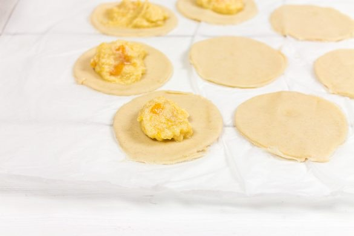
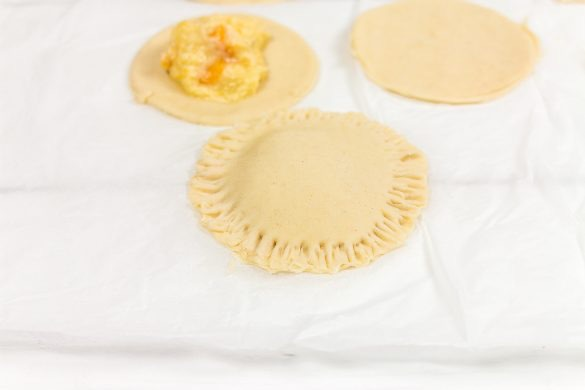
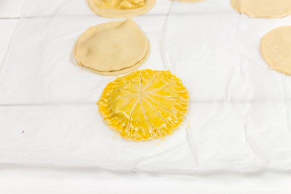
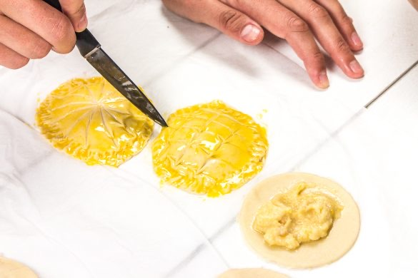

Mini galettes amande et mangue

Aujourd’hui c’est la dernière recette de l’année et j’ai décidé de partager avec vous la recette des mini galettes amande et mangue parce que oui bientôt c’est l’épiphanie alors qui sait peut-être que cette recette vous inspirera.
Tous les ans c’est pareil, on a même pas encore terminé les fêtes qu’il faut déjà penser à l’épiphanie^^!! Je suis la première à râler quand je vois les supermarchés, boulangeries et compagnie proposer des galettes presque avant Noël et pourtant me voici aujourd’hui entrain de partager avec vous une recette de galette. Cette année, je m’y prends plus tôt qu’habituellement car l’an dernier je n’avais même pas eu le temps de vous donner ma recette de frangipane (je compte bien y remédier j’espère cette année), mais aussi et surtout parce que mon chéri me tanne pour manger de la galette depuis que Noël est terminé. Comme vous le savez, j’aime beaucoup m’associer aux cidres Val de Rance pour les fêtes telles que l’Epiphanie, la Chandeleur, Pâques et cette année encore j’ai renouvelé mon expérience cidronomique en proposant ces mini galettes amande et mangue accompagnées de cidre doux. L’an dernier, j’avais fait une tourte au saumon en guise de galette des rois salée mais cette année j’ai eu envie de sucrée et surtout de faire des mini galettes. Je suis donc partie d’une crème aux amandes à laquelle j’ai ajouté des petits morceaux de mangue et on s’est tous régalés! Je n’ai pas mis de fèves, ni fait de couronne car non ce n’est pas encore le jour J! Ce format de galettes est parfait pour un goûter improvisé ou pour chasser une petite faim vite fait bien fait. Cette année je n’ai pas fait ma pâte feuilletée et je ne pense même pas en refaire pour la simple et bonne raison que je ne sais pas si je vais trouver du temps… Je vous laisse avec une petite vidéo pour illustrer cette recette de mini galette et je vous laisse la découvrir plus bas en espérant qu’elle vous plaira!
Enregistrer
Ingrédients
- Pâte feuilletée - 2
- Beurre à temp ambiante - 50g
- Poudre d'amande - 50g
- Sucre glace - 50g
- Oeufs - 30g (1 oeuf généralement)
- Maïzena - 5g
- Mangue - 25g
Instructions
- Dans un grand saladier, mélanger les ingrédients secs (poudre d’amande, sucre glace, maïzena)
- Couper le beurre en petits morceaux et ajoutez-le au mélange
- Mélanger
- Ajouter l’œuf (30g correspond généralement à un petit œuf mais penser à bien peser vos quantités)
- Mélanger jusqu'à obtenir un mélange homogène
- Ajouter la mangue coupée en petits morceaux (vous pouvez aussi réduire la mangue en purée si vous ne voulez pas de morceaux)
- Mélanger
- Étaler vos pâtes feuilletées et dessiner à l'emporte pièce des cercles de 8cm de diamètre
- Repartir la farce sur la moitié des cercles et recouvrez-les des autres cercles de pâtes
- En vous aidant d'une fourchette, écrasez bien les rebords de vos galettes pour que les parties du haut et du bas soient bien soudées
- A l'aide d'un pinceau étaler du jaune d’œufs sur les galettes et dessiner les formes que vous voulez à l'aide d'un couteau à pointe fine
- Enfourner 15-20 minutes à 180°
- Servir tiède avec un verre de cidre doux, du thé, du café ou un grand verre de lait 🙂




Les tips de la communauté
Recette très appréciée qui a séduit les lecteurs. L'ajustement proposé par l'auteure (ajouter des dés de mangue plutôt que la purée) s'est avéré délicieux et suscite des retours élogieux. Les lecteurs recommandent vivement et reviennent pour d'autres variations.
Astuces
- Pour une grande galette, doubler les quantités de mangue et cuire 20-25 minutes jusqu'à bien dorage
- Privilégier le 'feeling' en cuisine plutôt que les quantités précises pour les ajustements
- Découper la mangue en petits dés pour maximiser le goût du fruit
- Placer les dés de mangue par-dessus la crème à l'amande pour une meilleure distribution du goût
Variantes suggérées
- Utiliser de la mangue mixée au lieu de la purée
- Testée en version grande avec succès
- Adapter la quantité de mangue de 25g à 50g selon les préférences